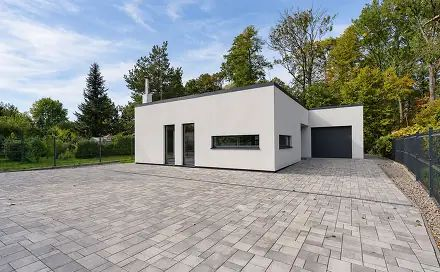

Previously known advert / cross-list
prodej domu 111 m² s pozemkem 658 m² Přemyšovská, Ostrava - Svinov 8 990 000 Kč
prodej domu 111 m² s pozemkem 658 m² Přemyšovská, Ostrava - Svinov 8 990 000 Kč
Not stated → 8,990,000 CZK
Original advert ↗